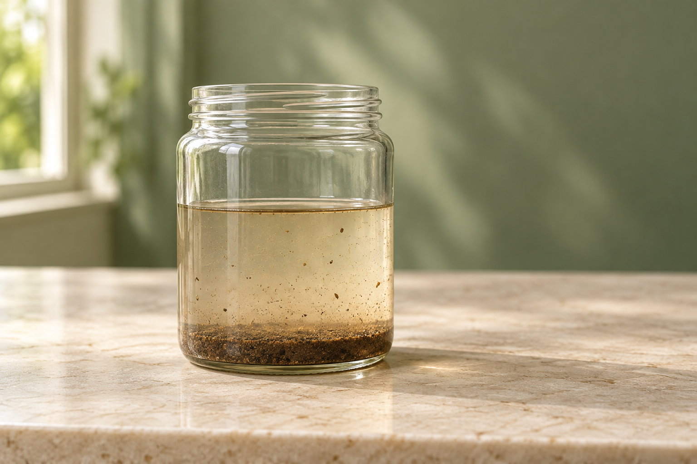

固體留在濾紙，水通過
用漏斗和濾紙過濾泥沙水。
泥沙混在水裡、鹽溶在水裡、顏色混在墨水裡。想分離的東西不同，方法也會不同。
這份水樣裡看得到泥沙。若想讓泥沙和水分開，可以用濾紙過濾；跟著步驟操作，看看固體和液體各自去了哪裡。

問題是：過濾後，泥沙和水分別會在哪裡？
摺好的濾紙放入漏斗後，把泥沙水樣沿著濾紙慢慢倒入。濾紙上的固體是殘留物；通過濾紙、流到下方容器的液體是濾液。
準備好摺濾紙，放入漏斗。
鹽溶在水中，不能用濾紙把它攔下來。讓水逐漸蒸發，再觀察容器中是否形成鹽的固體。
加熱前：鹽在水中，肉眼看不見分開的鹽粒。
在濾紙上點一滴水溶性彩色筆墨水，讓濾紙下端接觸溶劑。看著顏色逐漸分開；若出現不同色帶，表示這支筆的墨水可能混有不同色素。
先確認墨點在溶劑液面上方，再開始觀察。
先想清楚要留下或分開的是什麼，再對照操作後看見的結果。方法合適，才會得到想要的分離結果。
用漏斗和濾紙過濾泥沙水。
讓鹽水蒸發，觀察容器中形成的鹽晶體。
用簡易濾紙層析觀察混合色素。
換你來判斷：這三個目標，該選什麼方法？
看結果：固體留在濾紙，液體通過。
看結果：水分蒸發後，容器中形成鹽的固體。
看結果：觀察濾紙上有沒有不同色帶。
選完方法後，看看分離目標和結果是否對得上。